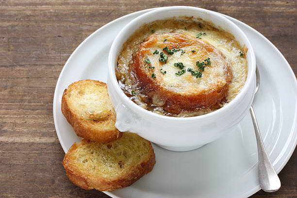

BLOG DE RECEITAS
Sopa de Cebola Gratinada

Ingredientes
- 4 cebolas
- 150g de manteiga
- 70g de farinha de trigo
- 1 litro de caldo de galinha
- sal a gosto
- pimenta-do-reino a gosto
Torradas:
- 2 unidades de pão francês
- 1 colher (sopa) de manteiga
- 20g de queijo gruyére
- 15ml de conhaque
Modo de Preparo
- Corte a cebola em julienne (meio círculos) e leve ao fogo brando com a manteiga e deixe refogar de 10 a 15 minutos.
- Adicione o conhaque e deixe flambar.
- Adicione a farinha de trigo, o caldo de galinha e deixe cozinhar por cerca de 20 minutos.
- Tempere com sal, pimenta-do-reino e reserve.
Torradas:
- Corte o pão francês em rodelas, passe a manteiga e polvilhe o queijo gruyére ralado.
- Leve as torradas para gratinar no forno.
- Sirva a sopa em cumbucas com as torradas no centro.
Comentários:
- queijo gruyére
- - O Gruyére é um dos queijos mais famosos do mundo e existe
desde o século XII. Originário da pequena cidade de Gruyére, na
Suíça, era fabricado com leite cru e sem olhaduras, chegando a
pesar 45 kg.